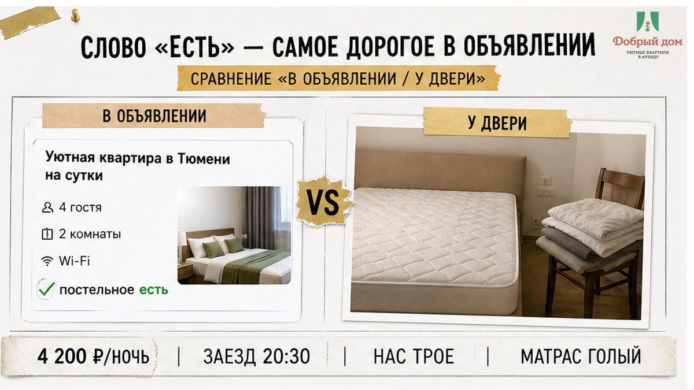
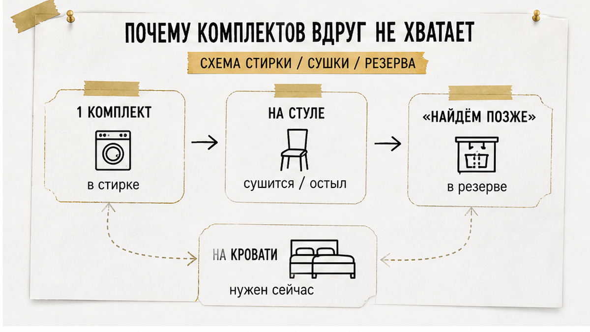
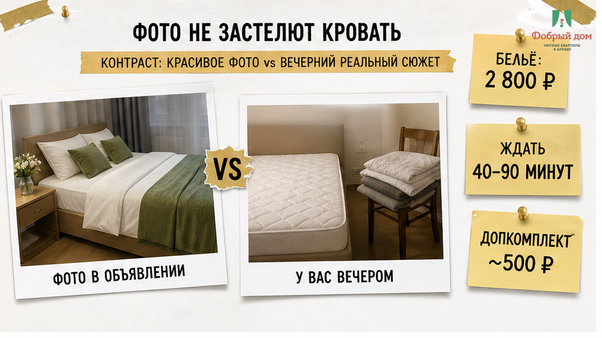
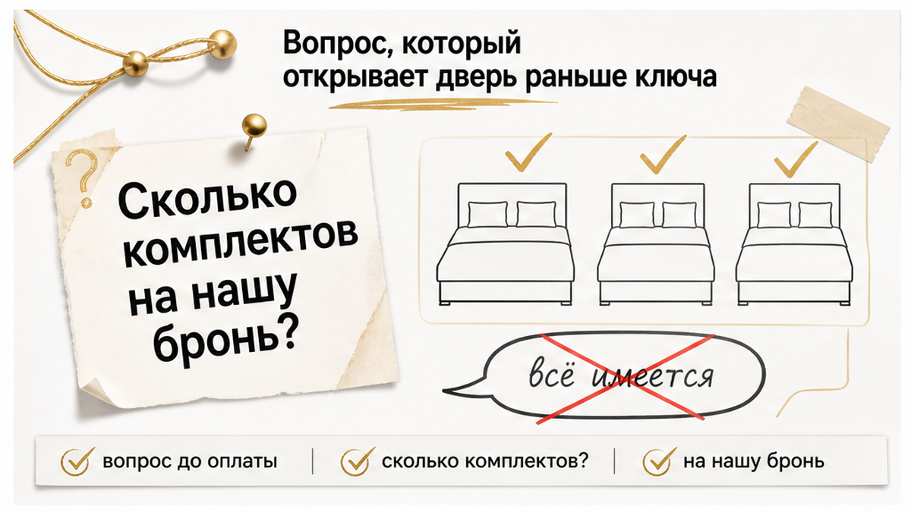
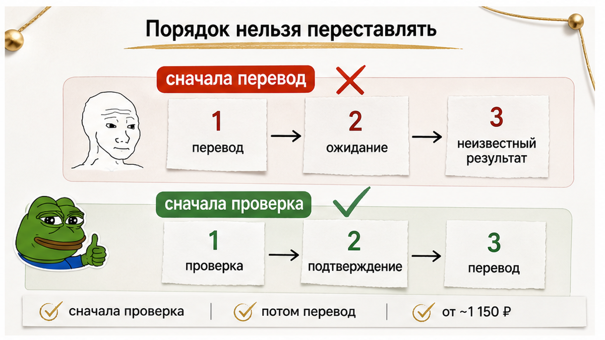
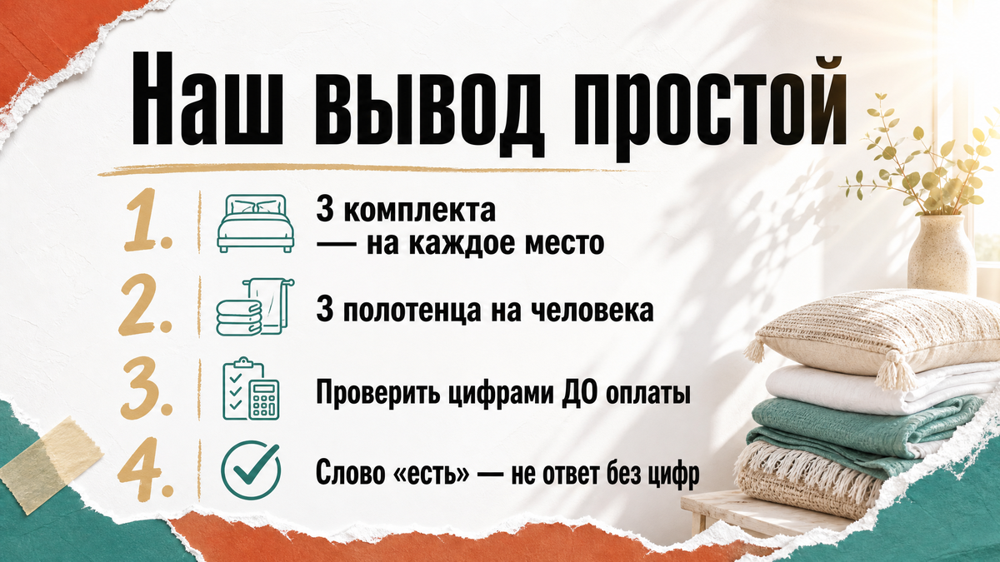
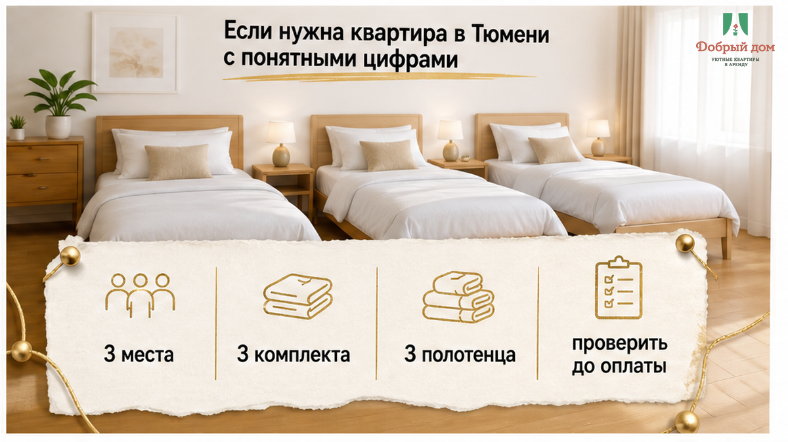

В объявлении было написано: «постельное есть». За ночь мы заплатили 4 200 ₽. В половине девятого вечера открыли квартиру — на двуспальной кровати голый матрас, на стуле один сложенный комплект, перевязанный лентой. А нас трое.
Это случилось пятого сентября две тысячи двадцать шестого, в ранний осенний вечер: около восемнадцати градусов, мелкий дождь, почти шесть часов дороги. Ребёнок уснул ещё на трассе, а в подъезде проснулся — голодный, злой, уставший. Я написал в чат: «Где постельное на остальные два места?» Через четыре минуты ответили: «найдём позже». Потом уточнили: «постельное есть, комплект на кровати». Он лежал не на кровати. На стуле. И был один.
Я хост посуточной в Тюмени. Это «Добрый дом». Если хотите поспорить или поделиться своей историей — я есть в Telegram · MAX.

После дороги вам предлагают выбор, которого вообще не должно быть: бежать в круглосуточный за бельём примерно за 2 800 ₽ или ждать, пока его «найдут». Такое ожидание легко растягивается на 40–90 минут. Особенно когда дождь, ребёнок хочет есть, а такси уже уехало.
Сломалось не бельё. Сломалось обещание. Для гостя «постельное есть» означает: приехали трое — подготовлены три места. Для хозяина это иногда значит совсем другое: один комплект в шкафу, один на всю бронь, бельё привезут позже, «разберётесь сами». Формально слово сказано. По-человечески — ничего не обещано.
Та же история бывает с кухней. В карточке написано «полностью оборудованная», а по факту чайник и микроволновка — и человек три вечера ест в кафе через дорогу. Мы разбирали это здесь: «Квартира посуточно: кухня есть». Три ночи в кафе каждый день.

Чаще всего это не злость и не желание специально испортить гостю вечер. Бельё надо стирать, сушить, гладить, хранить, менять. Оно не возникает в шкафу само. Нормальный ориентир в работе — три комплекта на каждое спальное место: один на кровати, один в стирке, один в резерве. Это не закон. Просто арифметика, которая не оставляет гостя у голого матраса.
Но запас стоит денег. На рынке Тюмени сотни предложений, минимальные цены начинаются примерно от 1 150 ₽ за ночь. Когда борьба идёт за нижнюю цену, часто экономят на том, чего не видно на фото. Кровать для фотосессии застелили один раз красиво — и снимок работает годами.
Иногда второй комплект действительно идёт за отдельные деньги: в некоторых сервисах доплата бывает порядка 500 ₽. Это нормально, если написано заранее и заметно. Ненормально — узнать об этом у двери вечером.
С количеством гостей работает та же схема: бронировали двоих, приехали втроём — и появляется доплата. Об этом был отдельный разговор: «Оплатил за двоих. У двери попросили доплату за третьего». Гостей и бельё иногда считают не по брони, а по факту вашего приезда. И это самый плохой момент для торга.

Белоснежное бельё на снимке, рейтинг 4,8 — кажется, всё в порядке. Но фотография показывает лучший день квартиры, а не ваш вторник. А рейтинг 4,8 из двух отзывов «всё супер» — не гарантия, а украшение карточки. Вот история именно про это: «Рейтинг 4,8 у квартиры посуточно. Два отзыва, одно и то же: „всё супер“».
Отдельно смотрите на бесконтактное заселение. Ключи лежат в сейфе, хозяина рядом нет, и вы обнаруживаете проблему уже после входа. Как заранее не оставить себе эту ловушку — в материале «Бесконтактное заселение посуточно в Тюмени».
Один комплект на бронь — это норма или обман, если вас трое? Напишите свою позицию в Telegram или MAX. Отвечаю там лично: правда интересно, где вы проводите эту границу.

Не спрашивайте: «Бельё есть?» На такой вопрос вам почти всегда скажут: «Есть». Спросите иначе, письменно, до перевода:
«Сколько комплектов постельного белья будет подготовлено именно на нашу бронь?»
Нужна цифра. «Три комплекта, три места застелены» — понятный ответ. «Всё имеется», «не переживайте», «есть в квартире» — не ответ. Переспросите. Ещё уточните: кто застилает кровати и что произойдёт, если комплектов не хватит.
У нас на сообщение «нас трое, приедем поздно» ответ простой: три спальных места, три комплекта, три полотенца на человека, всё готово ко времени заезда. Если белья на конкретную бронь нет — Нет. Так не заселяем.
Не «есть в шкафу». Не «один комплект на бронь». А три застеленных места к вашему заезду.

Понравились фото, цена подходит, квартиру могут забрать другие — и хочется быстрее отправить предоплату. Но после перевода у вас меньше возможностей услышать конкретику. До него вы выбираете. После — вам могут пообещать «найти позже».
Сначала проверка. Потом перевод. Не наоборот.

Постельное бельё — не просто ткань. Это подпись хозяина под его словами. Строчка «есть» похожа на рукопожатие в темноте: руку вроде протянули, но кто там и что именно обещано — неизвестно, пока не включится свет. Хороший хозяин включает его заранее: в переписке, цифрами, до денег.

Напишем количество комплектов до перевода, а не после вашего приезда.